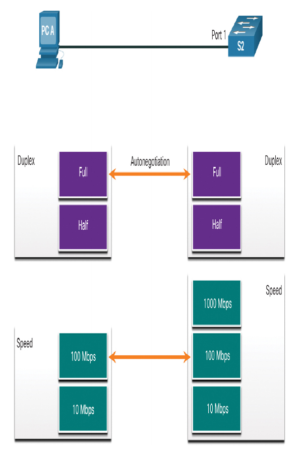

Table of Contents
1. Switching Concepts
TLDR: about fundamentals of switches and switch operations
1.1. Frame Forwarding
1.2. Switching in Networking
The concept of switching and forwarding frames in universal in networking and telecommunications. Various types of switches are used in LANs, WANs, and in the public switched telephone network (PSTN)
The decisionon how a switch forwards traffic is made based on the flow of that traffic.
Ingress
- used to describe the port where a frame enters the device
Egress
- used to describe the port that frames will use when leaving the device
1.2.1. The Switch MAC Address Table
Switches use the destination mAC to direct network communications through the switch, out the appropriate port, toward the destination. For the switch to know which port to use to transmit a frame, it must first learn which devices exist on each port, building the MAC address table. The MAC address table is stored in content addressable memory (CAM), which is a special type of memory used in high-speed searching applications. For this reason, the MAC address table is sometimes also called the CAM table
The table if populated by recording the source MAC address of each device conencted to each of its ports.
1.2.2. The Switch Learn Forward Method
Is a two-step process performed on every Ethernet frame that enters a switch.
- Step 1: Examining the Source MAC Address
The SRC MAC address of the frame and port number where the frame entered is examined:
- if the src MAC address does not exist in the table, the mac address and incoming port number are added to the table
- if the source mac does exist, the switch updates the refresh timers for that entry (5 mins is default for most ethernet switches).
- Step 2: Examining the Destination MAC Address
If the destination MAC address is a unicast address, the switch looks for a match between the destination MAC address of the frame and an entry in its MAC address table.
- if the MAC address is in the table, the frame is forwarded out of the specified port
- if the MAC address is not in the table, the switch floods all the egress ports (unknown unicast)
- if the destination MAC address is a broadcase or a multicast, the frame is also flooded out all the ports except the incoming port
1.2.3. Switching Forwarding Methods
Application-specific-integrated-circuits (ASICs)
- reduce the frame-handling time within the device and allow the device to manage an increased number of frames without degrading performance.
- Layer 2 switches use one if the two methods to switch frames
- store-and-forward switching
- cut-through switching
1.2.4. Store-and-forward switching
Makes a forwarding decision on a frame after it has received the entire frame and checked the frame for errors using a mathematical error-checking mechanism known as a cyclic redundancy check (CRC). It is the Cisco's primary LAN switching method.
- Error checking
- after receiving the entire framethe switch compares the frame check sequence (FCS) value in the last field of the datagram against its own FCS calculations
- Automatic buffering
Does not forward invalid frames
1.2.5. Cut-through switching
Begins the forwarding process after the destination MAC address of an incoming frame and the egress port have been determined. Could forward invalid frames because no FCS is performed. However, it has the ability to perform rapid frame switching. This means the switch can make a forwarding decision as soonas it as looked up the destination MAC address of the frame in its MAC address table
The lower latency speed of the switching forwarding method makes it more appropriate for demanding high-performance computing (HPC) applications.
- Fragment free switching
- a modified form of cut-through switching in which the switch only starts forwarding the frame after it has read the Type field.
- provides better error checking than cut-through, with practically no increase in latency
1.3. Collision and Broadcase Domains
1.3.1. Collision domains
Only a problem in half-duplex connections. Take into note switchport auto negotiating of duplex and speed. 
1.3.2. Broadcast domains
A collection of interconnected switches forms a single broadcast domain. Only a network layer device can divide a layer 2 broadcast domain. Routers are used to segment broadcast domains but will also a segment collision domain.
Too many broadcasts and a heavy traffic load on a network can result in congestion, which slows down network performance
1.3.3. Alleviate Network Congestion
Characteristics of switches that alleviate network congestion
- Fast port speeds
- fast internal swithing
- large frame buffers
- high port density